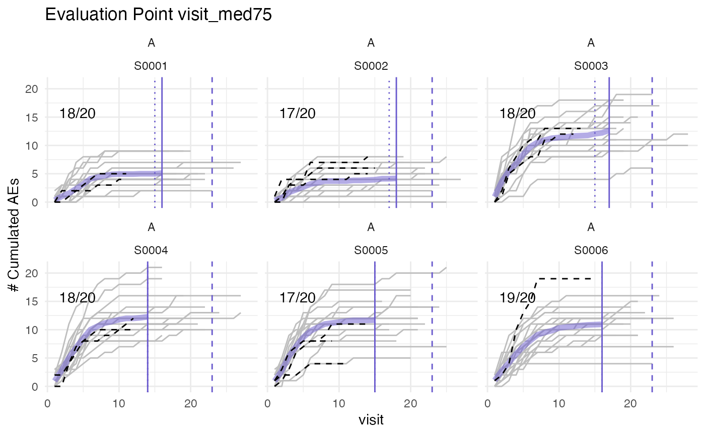

Plots cumulative AEs against visits for patients at sites of given study and compares against visit_med75.
Usage
plot_visit_med75(
df_visit,
df_site = NULL,
study_id_str,
n_sites = 6,
min_pat_pool = 0.2,
verbose = TRUE,
event_names = "ae",
plot_event = "ae",
...
)Arguments
- df_visit
dataframe
- df_site
dataframe, as returned by
site_aggr()- study_id_str
character, specify study in study_id column
- n_sites
integer, Default: 6
- min_pat_pool
double, minimum ratio of available patients available for sampling. Determines maximum visit_med75 value see Details. Default: 0.2
- verbose
logical, Default: TRUE
- event_names
vector, contains the event names, default = "ae"
- plot_event
vector containing the events that should be plotted, default = "ae"
- ...
not used
Examples
df_visit <- sim_test_data_study(
n_pat = 120,
n_sites = 6,
ratio_out = 0.4,
factor_event_rate = - 0.6
) %>%
dplyr::rename(
site_number = site_id,
patnum = patient_id,
n_ae = n_event
)
df_site <- site_aggr(df_visit)
simaerep:::plot_visit_med75(df_visit, df_site, study_id_str = "A", n_site = 6)
#> purple line: mean site ae of patients with visit_med75
#> grey line: patient included
#> black dashed line: patient excluded
#> dotted vertical line: visit_med75, 0.75 x median of maximum patient visits of site
#> solid vertical line: visit_med75 adjusted, increased to minimum maximum patient visit of included patients
#> dashed vertical line: maximum value for visit_med75 adjusted, 80% quantile of maximum patient visits of study
#>
